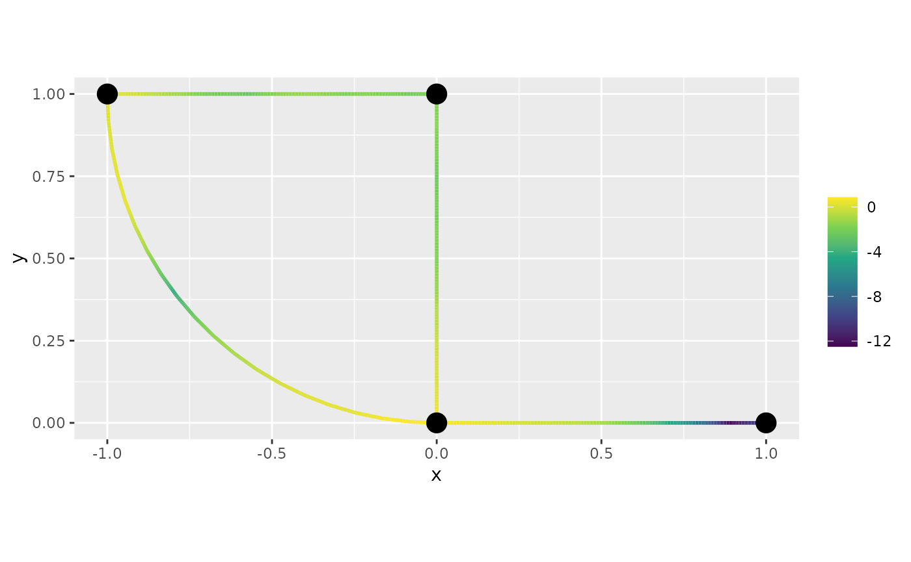
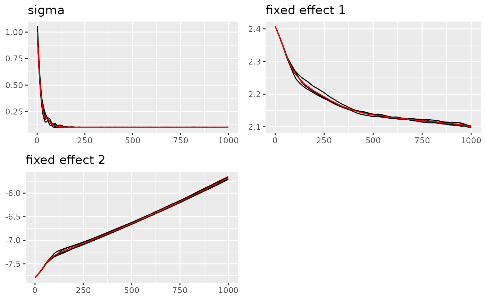

Introduction
Metric graph is a class of graphs that are embedded in a metric space. This type of graph can model some specific spatial structures, including road networks, river networks, etc.
In this vignette, we will show how to model a Matern SPDE model on a
metric graph together with the R package
MetricGraph Bolin, Simas, and Wallin (2023b). It
contains functions for working with data and random fields on compact
metric graphs. The main functionality is contained in the
metric_graph class, which is used for specifying metric
graphs, adding data to them, visualization, and other basic functions
that are needed for working with data and random fields on metric
graphs.
To know more about the theory of Matern SPDE model on metric graphs, please refer to Bolin et al. (Bolin, Simas, and Wallin 2023a, 2023c).
library(MetricGraph)
#>
#> Attaching package: 'MetricGraph'
#> The following object is masked from 'package:stats':
#>
#> filter
library(ngme2)
#> This is ngme2 of version 0.6.0
#> - See our homepage: https://davidbolin.github.io/ngme2 for more details.
set.seed(16)Simulation on a metric graph
First we will build the graph and construct a uniform mesh on each edges.
edge1 <- rbind(c(0,0),c(1,0))
edge2 <- rbind(c(0,0),c(0,1))
edge3 <- rbind(c(0,1),c(-1,1))
theta <- seq(from=pi,to=3*pi/2,length.out = 20)
edge4 <- cbind(sin(theta),1+ cos(theta))
edges = list(edge1, edge2, edge3, edge4)
graph <- metric_graph$new(edges = edges)
#> Starting graph creation...
#> LongLat is set to FALSE
#> The current tolerances are:
#> Vertex-Vertex 0.001
#> Vertex-Edge 0.001
#> Edge-Edge 0
#> Setup edges and merge close vertices
#> Snap vertices to close edges
#> Total construction time: 0.64 secs
graph$plot()
# construct the mesh
graph$build_mesh(h = 0.1)
graph$plot(mesh = TRUE)
# Refine the mesh and print how many mesh nodes
graph$build_mesh(h = 0.005)
length(graph$mesh$h)
#> [1] 915Next, we simulation non-Gaussian Matern field with NIG noise using
simulate function.
simu_nig <- noise_nig(mu=-10, sigma=30, nu=0.5)
matern_graph <- ngme2::f(
model="matern",
theta_K = log(6), #kappa = 8
mesh=graph,
noise=simu_nig
)
matern_graph
#> Model type: Matern
#> kappa = 6
#> Noise type: NIG
#> Noise parameters:
#> mu = -10
#> sigma = 30
#> nu = 0.5
W <- simulate(matern_graph, seed=10)[[1]]
graph$plot_function(X=as.numeric(W))
#> Warning in viridisLite::viridis(n, alpha, begin, end, direction, option):
#> Option 'd' does not exist. Defaulting to 'viridis'.
# 3d plot of the random field
graph$plot_function(X=as.numeric(W), plotly=TRUE)
#> Loading required namespace: plotly
#> Warning in viridisLite::viridis(n, alpha, begin, end, direction, option):
#> Option 'd' does not exist. Defaulting to 'viridis'.With the latent field generated, next we construct observations.
# build observation and A matrix
obs.per.edge <- 200 # how many observations per edge
obs.loc <- NULL
for(i in 1:graph$nE) {
obs.loc <- rbind(obs.loc,
cbind(rep(i,obs.per.edge), runif(obs.per.edge)))
}
n.obs <- obs.per.edge*graph$nE
A <- graph$fem_basis(obs.loc)
# using the model for inference
sigma.e <- 0.1
x1 <- obs.loc[,1]
x2 <- obs.loc[,2]
Y <- 2*x1 - 3*x2 + as.vector(A %*% W + sigma.e * rnorm(n.obs))
df_data <- data.frame(y = Y, edge_number = obs.loc[,1],
distance_on_edge = obs.loc[,2],
x1 = x1, x2 = x2)
graph$clear_observations()
graph$add_observations(data = df_data, normalized = TRUE)
#> Adding observations...
graph$plot(data = "y")
Next we estimate the model using ngme2:
fit_nig <- ngme(
y ~ 0 + x1 + x2 +
f(model="matern", mesh=graph, name="graph", noise=noise_nig()),
data = graph$get_data(),
control_opt = control_opt(
iterations = 1000,
iters_per_check = 100,
rao_blackwellization = TRUE,
n_parallel_chain = 4,
# verbose = TRUE,
seed = 1
)
)
#> Starting estimation...
#>
#> Starting posterior sampling...
#> Posterior sampling done!
#> Note:
#> 1. Use ngme_post_samples(..) to access the posterior samples.
#> 2. Use ngme_result(..) to access different latent models.
fit_nig
#> *** Ngme object ***
#>
#> Fixed effects:
#> x1 x2
#> 2.10 -5.76
#>
#> Models:
#> $graph
#> Model type: Matern
#> kappa = 7.16
#> Noise type: NIG
#> Noise parameters:
#> mu = -20.2
#> sigma = 436
#> nu = 0.0136
#>
#> Measurement noise:
#> Noise type: NORMAL
#> Noise parameters:
#> sigma = 0.103
#>
#>
#> Number of replicates is 1
traceplot(fit_nig, "graph")
traceplot(fit_nig)
Graph model with replicates
The model with replicates is similar to other models in ngme2. We
simply provide the replicate argument in ngme
function.
n_repl <- 5
df_data <- NULL
for (repl in 1:n_repl) {
obs.per.edge <- 200 # how many observations per edge
obs.loc <- NULL
for(i in 1:graph$nE) {
obs.loc <- rbind(obs.loc,
cbind(rep(i,obs.per.edge), runif(obs.per.edge)))
}
n.obs <- obs.per.edge*graph$nE
A <- graph$fem_basis(obs.loc)
# using the model for inference
sigma.e <- 0.1
x1 <- obs.loc[,1]
x2 <- obs.loc[,2]
Y <- 2*x1 - 3*x2 + as.vector(A %*% W + sigma.e * rnorm(n.obs))
df_data_tmp <- data.frame(y = Y, edge_number = obs.loc[,1],
distance_on_edge = obs.loc[,2],
x1 = x1, x2 = x2, repl = repl)
df_data <- rbind(df_data, df_data_tmp)
}
graph$clear_observations()
graph$add_observations(data = df_data, normalized = TRUE, group="repl")
#> Adding observations...Next step is easy, we simply provide extra replicate
argument to be same as the group from the graph function.
fit_repl <- ngme(
y ~ 0 + x1 + x2 +
f(model="matern", mesh=graph, name="graph", noise=noise_nig()),
data = graph$get_data(),
control_opt = control_opt(
iterations = 2000,
rao_blackwellization = TRUE,
n_parallel_chain = 4,
# verbose = TRUE,
seed = 1
),
replicate = ".group"
)
#> Starting estimation...
#>
#> Starting posterior sampling...
#> Posterior sampling done!
#> Note:
#> 1. Use ngme_post_samples(..) to access the posterior samples.
#> 2. Use ngme_result(..) to access different latent models.
fit_repl
#> *** Ngme object ***
#>
#> Fixed effects:
#> x1 x2
#> 2.05 -5.72
#>
#> Models:
#> $graph
#> Model type: Matern
#> kappa = 6.67
#> Noise type: NIG
#> Noise parameters:
#> mu = -27.6
#> sigma = 1023
#> nu = 0.00163
#>
#> Measurement noise:
#> Noise type: NORMAL
#> Noise parameters:
#> sigma = 0.1
#>
#>
#> Number of replicates is 5
traceplot(fit_repl, "graph")
traceplot(fit_repl)
Kringing
Kringing is a method for predicting the value of a random field at an unobserved location based on observations of the field at other locations.
We can use predict function in ngme2 to do
kringing.
# create new observations
locs <- graph$get_mesh_locations()
X = as.data.frame(locs)
names(X) <- c("x1", "x2")
preds <- predict(
fit_repl,
data = X,
# data = list(x1=0, x2=0),
map = list(graph = locs)
)
# plot the prediction
graph$plot_function(preds$mean)
#> Warning in viridisLite::viridis(n, alpha, begin, end, direction, option):
#> Option 'd' does not exist. Defaulting to 'viridis'.
# compare with the true data
graph$plot(data="y")